Viva sua melhor experiência nos Lençóis.
Lagoas cristalinas, pôr do sol nas dunas, a revoada dos guarás e o céu estrelado. Passeios em 4x4, barco e quadriciclo pelos Lençóis Maranhenses, saindo de Santo Amaro do Maranhão.
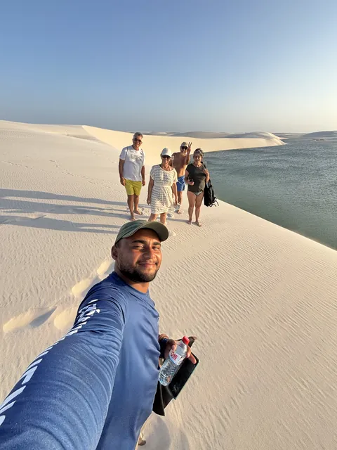
na trilha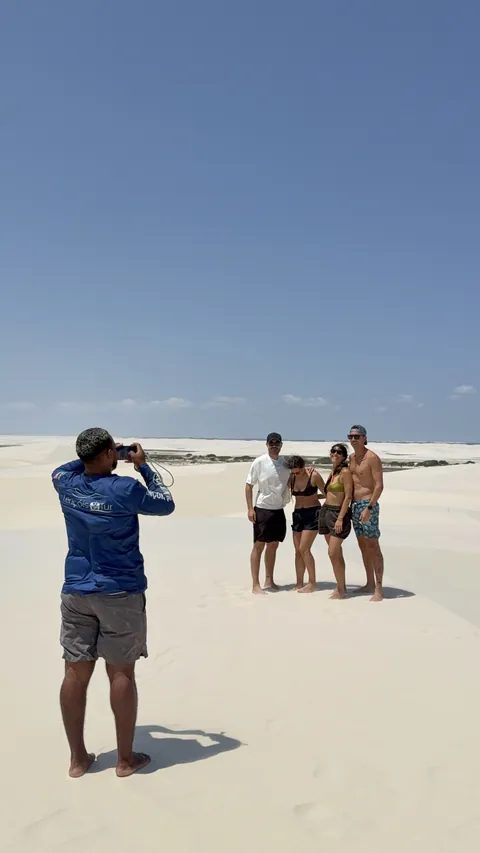
nas dunas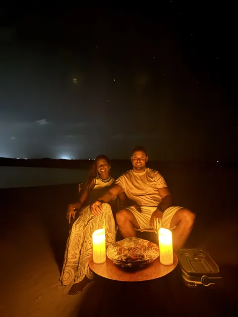
à noiteo paraíso pelos olhos de quem nasceu aqui
Bem-vindo aos Lençóis pelo olhar de quem é daqui.
Olá, eu sou o Maiton, nativo de Santo Amaro do Maranhão e fundador da Lençóis MTur. Há 9 anos transformo o meu “quintal de casa” em cenário de memórias inesquecíveis para viajantes do mundo todo. Desde 2018, atuo profissionalmente como guia e condutor de turismo nas dunas mais bonitas do Brasil.
Para mim, os Lençóis não são só um destino fotográfico: são um lugar vivo, cheio de histórias e segredos que só quem cresceu aqui conhece. Por isso o foco da Lençóis MTur não é vender passeio comum, e sim proporcionar experiências autênticas, seguras e profundas.
Maiton fundador e guia nativo
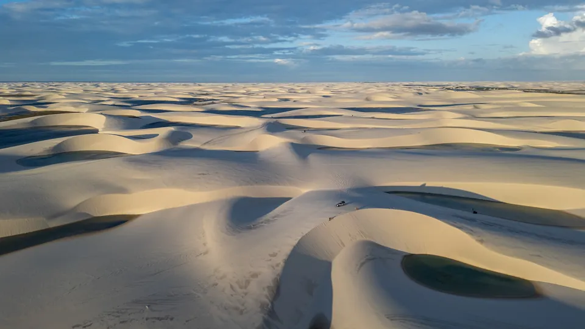
Há 9 anos transformando os Lençóis Maranhenses em lembranças eternas.
Explore o paraíso de Santo Amaro com quem é daqui e vivencie experiências incríveis.
Reservar pelo WhatsAppEscolha o seu passeio.
Filtre pelo tempo que você tem. Toque em um passeio para ver o roteiro completo, o que não está incluso e reservar direto pelo WhatsApp.
 09h às 18h
09h às 18h
Circuito Betânia
Trilha pelas dunas, banho em lagoas, almoço no Povoado de Betânia e redes sobre o Rio Alegre.
a partir deR$ 180/pessoa Ver roteiro 14h às 19h
14h às 19h
Circuito Emendadas
Caminhada pela área de preservação, vista do alto da duna e volta sob a Via Láctea.
a partir deR$ 180/pessoa Ver roteiro Manhã ou tarde
Manhã ou tarde
Andorinhas e Gaivota
Um dos circuitos mais famosos de Santo Amaro, cenário de “Da Cor do Pecado” e “Casa de Areia”.
a partir deR$ 130/pessoa Ver roteiro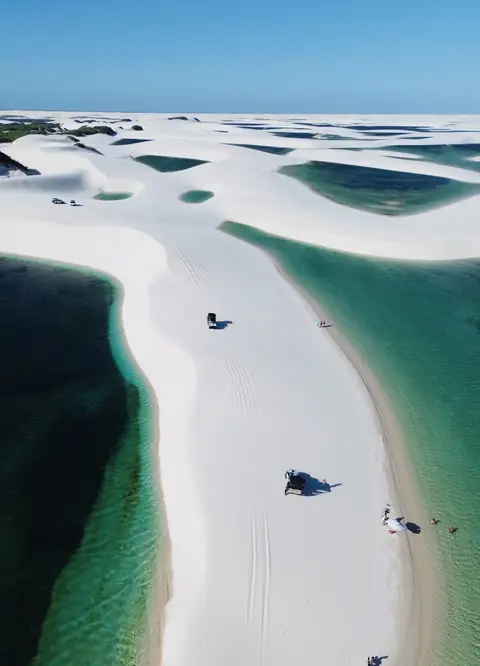
09h às 18hCircuito Ponta Verde
Lagoas quase sempre vazias numa área reservada do Parque e pôr do sol sobre o Lago Jangada.
a partir deR$ 190/pessoa Ver roteiro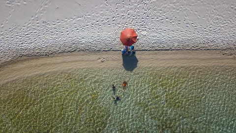
Manhã ou tardeCircuito América
Voadeira pelo encontro do Rio Alegre com o Lago Jangada até a Lagoa do América, cheia de sombra.
a partir deR$ 130/pessoa Ver roteiro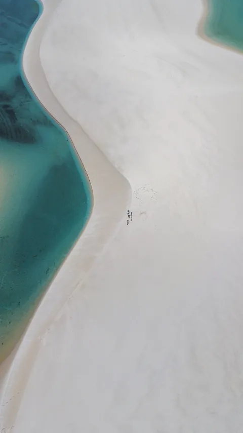
09h às 18hCircuito Rancharia
A Lagoa da Rancharia, uma das maiores do Parque, almoço regional com redes e uma lagoa exclusiva.
a partir deR$ 220/pessoa Ver roteiro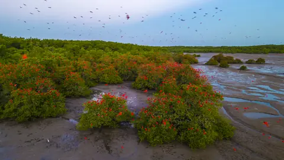
A partir das 16hRevoada dos Guarás
Em Primeira Cruz, a 15 minutos de Santo Amaro, o céu fica vermelho com a revoada dos guarás.
privadoR$ 1.200o grupo Ver roteiro 19h · 3 horas
19h · 3 horas
Contemplação das Estrelas
A Via Láctea sobre as dunas. Nas noites de luar, os Lençóis ficam iluminados.
a partir deR$ 140/pessoa Ver roteiro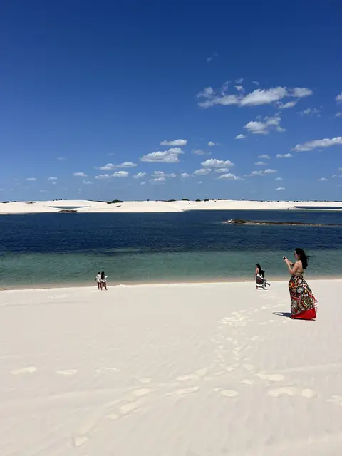
09h às 19hCombo Betânia + Emendadas
Os dois principais roteiros de Santo Amaro num só dia: lagoas e redes em Betânia, caminhada até as Emendadas e volta sob as estrelas.
privadoR$ 2.200até 6 pessoas Ver roteiroDo café da manhã às estrelas.
Veja em que horário cada passeio acontece e combine mais de um no mesmo dia, por exemplo um passeio de manhã com a revoada ou as estrelas à noite.
- 8h
- 10h
- 12h
- 14h
- 16h
- 18h
- 20h
- 22h
Arraste para o lado para ver o dia inteiro.
dica: a taxa municipal de R$ 10,00 vale por 3 dias, então dá para fazer vários passeios com a mesma taxa.
Três paradas até a duna.
Escolha o roteiro
Veja os passeios e o horário de cada um. Na dúvida, a gente ajuda a montar a programação dos seus dias em Santo Amaro.
Chame no WhatsApp
Mande o passeio, a data e quantas pessoas vão. Você recebe o valor, o horário e o ponto de encontro.
Aproveite
Com tudo confirmado, é chegar no horário com protetor solar, roupa de banho e câmera carregada.
Antes de arrumar a mala.
Pergunte direto pra gente. A resposta vem pelo WhatsApp.
Perguntar no WhatsAppQuais passeios saem de Santo Amaro do Maranhão?
A Lençóis MTur faz 9 passeios saindo de Santo Amaro do Maranhão: Circuito Betânia (dia inteiro, R$ 180 por pessoa), Circuito Emendadas (tarde e noite, R$ 180 por pessoa), Circuito Andorinhas e Gaivota (meio período, R$ 130 por pessoa), Circuito Ponta Verde (dia inteiro, R$ 190 por pessoa), Circuito América (meio período, R$ 130 por pessoa), Circuito Rancharia (dia inteiro, R$ 220 por pessoa), Revoada dos Guarás (fim de tarde, R$ 1.200 privado), Contemplação das Estrelas (noturno, R$ 140 por pessoa) e Combo Betânia + Emendadas (dia inteiro, R$ 2.200 privado).
Quem conduz os passeios?
O Maiton, nativo de Santo Amaro do Maranhão e fundador da Lençóis MTur. Ele atua profissionalmente como guia e condutor de turismo nos Lençóis Maranhenses desde 2018 e conhece as lagoas, as trilhas e as comunidades da região desde criança.
Existe alguma taxa além do passeio?
Sim. Santo Amaro cobra uma taxa municipal de R$ 10,00, válida por 3 dias, que não está inclusa nos passeios. No Circuito Betânia, dependendo da época, também há uma taxa de travessia de R$ 10,00.
O almoço está incluso?
Os circuitos de dia inteiro (Betânia, Ponta Verde e Rancharia) têm parada para almoço na comunidade, com descanso em redes. No Betânia o almoço é pago à parte. Confirme os detalhes do seu roteiro pelo WhatsApp.
Tenho pouco tempo. Qual passeio escolher?
Os de meio período cabem em uma manhã ou uma tarde: Andorinhas e Gaivota (09h às 12h ou 14h às 18h, com pôr do sol) e América (09h às 12h ou 14h às 17h). No fim do dia, dá para incluir a Revoada dos Guarás, a partir das 16h, ou a Contemplação das Estrelas, às 19h.
Vocês buscam na hospedagem?
Nos circuitos Betânia e Ponta Verde, o 4x4 busca você na hospedagem no início do passeio. Nos outros roteiros, o ponto de encontro é combinado na reserva.
Dá para fazer passeio de quadriciclo?
Sim. O Circuito Andorinhas e Gaivota, ideal para quem busca aventura, também pode ser feito de quadriciclo.
Qual é o passeio mais tranquilo?
O Circuito América. O trajeto é de voadeira (barco) pelo encontro do Rio Alegre com o Lago Jangada e termina na Lagoa do América, com muita sombra e pouco movimento.
Quanto custam os passeios?
Por pessoa, os passeios vão de R$ 130 a R$ 220, com água, cadeiras e guarda-sol inclusos na maioria deles. Também dá para fechar o passeio privado só para o seu grupo (de R$ 800 a R$ 2.200), com bebidas e mimos inclusos. O valor de cada roteiro está no card do passeio. A taxa municipal de R$ 10,00 é cobrada à parte.
Fotos que não precisam de filtro.
Mais fotos e vídeos dos passeios no Instagram @lencoismtur.
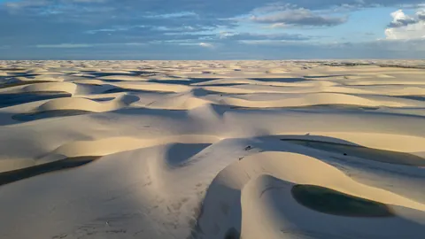
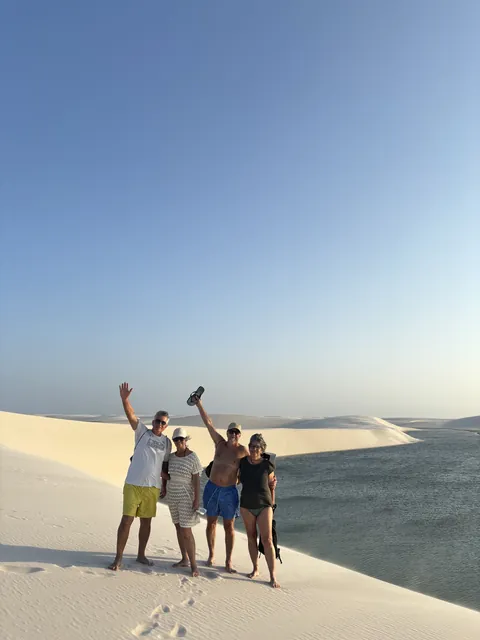
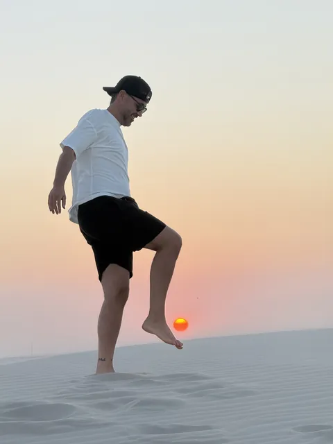
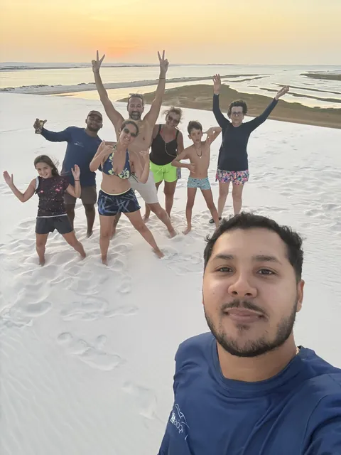
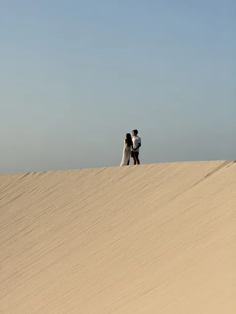
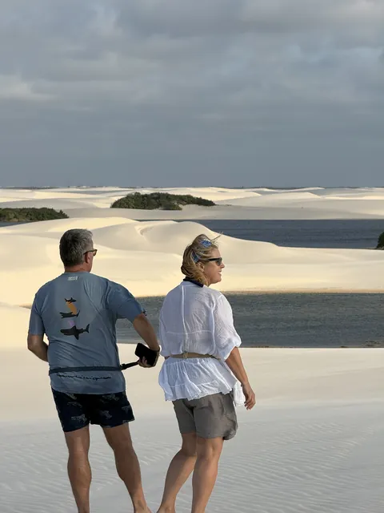
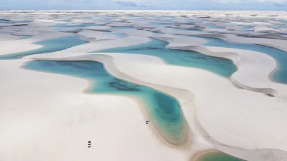
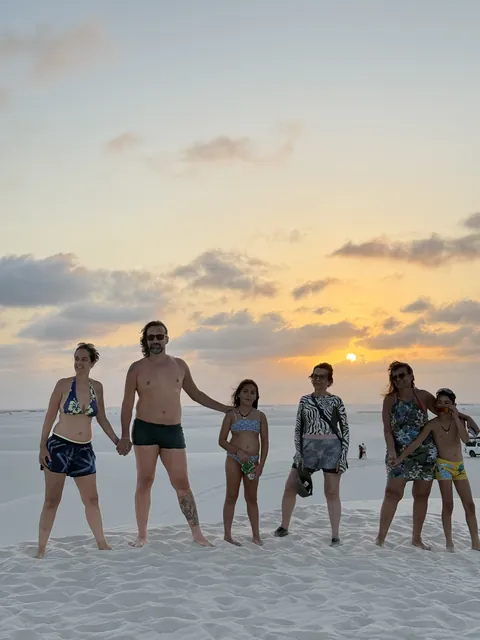
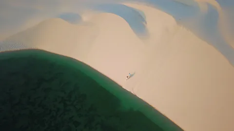
Sua vaga começa com um “oi”.
Diga qual passeio você quer, a data e quantas pessoas vão. A gente responde com valor, horário e tudo o que você precisa levar.